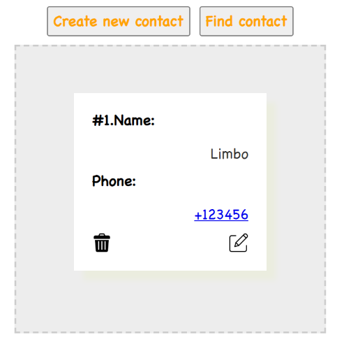
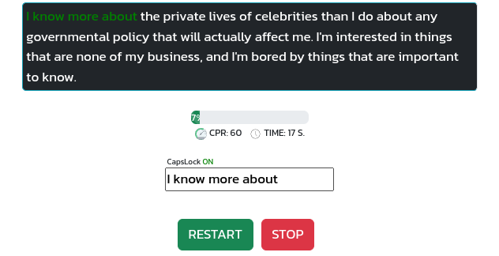
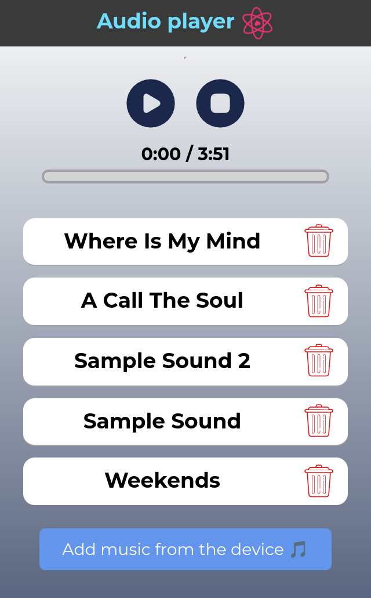
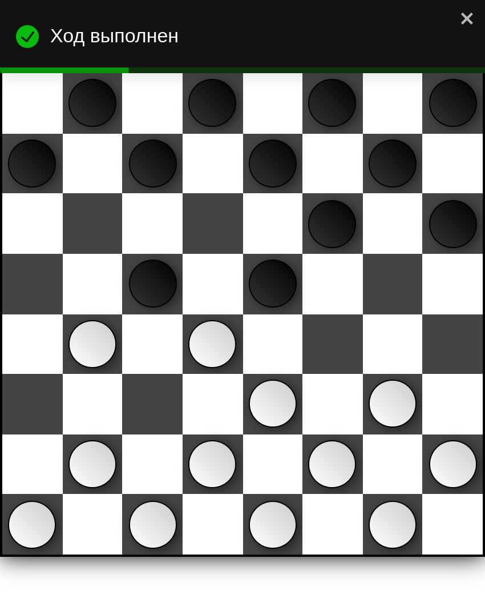
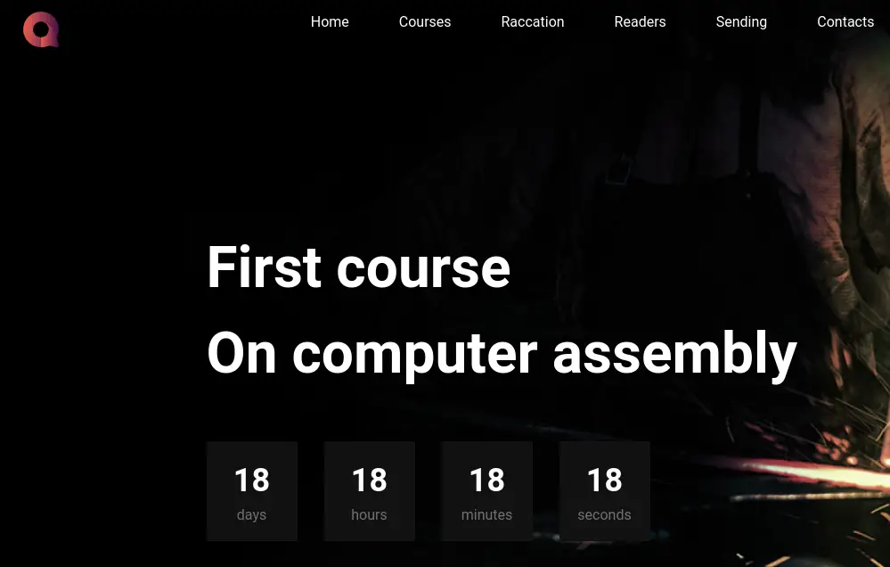

Here you can see my projects.
I hope you enjoy them!
Click right or left to view all the projects.
This app is like your personal phone diary on your computer. You can save names and phone numbers of your friends and family. It is easy to find a contact, change their details, or remove them if you need. It's made to be simple and helpful for keeping track of who you know.
GitHub This is a speed check app. It's a tool that tells you how fast your internet connection is. With this, you can see if your internet is running fast or slow. It's simple to use: one click and you'll know your speed. Handy for making sure your internet is good for all you need to do online.
GitHub This project lets you listen to your favorite music on your computer. You can play, pause, or skip songs. It's designed to be easy to use. Enjoy your music with just a few clicks!
GitHub Classic checkers game. You can play with a friend on one device. It's a fun and simple game that you can enjoy with a friend. Just click and move your pieces to win! Made with Next.js.
GitHub This is landing page for PC Assembly Cource. It's made with HTML, SCSS. A simple and simple design that allows you to quickly and easily find the necessary information.
GitHub 